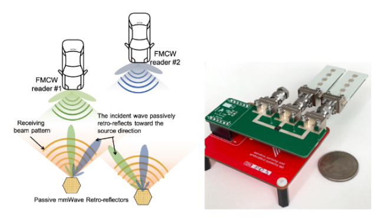

Project Millimetro: mmWave Retro-Reflective Tags for Accurate, Long Range Localization

Millimetro is an ultra-low-power tag that can be localized at high accuracy over extended distances. We develop Millimetro in the context of autonomous driving to efficiently localize roadside infrastructure such as lane markers and road signs, even if obscured from view, where visual sensing fails. While RF-based localization offers a natural solution, current ultra-low-power localization systems struggle to operate accurately at extended rangesunder strict latency requirements. Millimetro addresses this challenge by re-using existing automotive radars that operate at mmWave frequency where plentiful bandwidth is available to ensure high accuracy and low latency. We address the crucial free space path loss problem experienced by signals from the tag at mmWave bands by building upon Van Atta Arrays that retro-reflect incident energy back towards the transmitting radar with minimal loss and low power consumption. Our experimental results indoors and outdoors demonstrate a scalable system that operates at a desirable range (over 100 m), accuracy (centimeter-level), and ultra-low-power.
Citation
- Millimetro: mmWave Retro-Reflective Tags for Accurate, Long Range Localization, Elahe Soltanaghaei (Co-Primary), Akarsh Prabhakara (Co-Primary), Artur Balanuta (Co-Primary), Matthew Anderson, Jan M. Rabaey, Swarun Kumar and Anthony Rowe, MobiCom 2021 PAPER